第4章 程序活动单元Activity¶
4.1 Activity的生命周期¶
4.1.2 生命周期方法¶
创建一个名为ActivityBasic的应用程序。在程序中的MainActivity中重写Activity的生命周期方法，通过打印日志观察生命周期方法的调用过程。
package cn.itcast.activitybasic;
import android.support.v7.app.AppCompatActivity;
import android.os.Bundle;
import android.util.Log;
public class MainActivity extends AppCompatActivity {
@Override
protected void onCreate(Bundle savedInstanceState) {
super.onCreate(savedInstanceState);
setContentView(R.layout.activity_main);
Log.i("ActivityBasic", "MainActivity onCreate()");
}
@Override
protected void onStart() {
super.onStart();
Log.i("ActivityBasic", "MainActivity onStart()");
}
@Override
protected void onRestart() {
super.onRestart();
Log.i("ActivityBasic", "MainActivity onRestart()");
}
@Override
protected void onStop() {
super.onStop();
Log.i("ActivityBasic", "MainActivity onStop()");
}
@Override
protected void onDestroy() {
super.onDestroy();
Log.i("ActivityBasic", "MainActivity onDestroy()");
}
@Override
protected void onPause() {
super.onPause();
Log.i("ActivityBasic", "MainActivity onPause()");
}
@Override
protected void onResume() {
super.onResume();
Log.i("ActivityBasic", "MainActivity onResume()");
}
}
启动应用，打印出的日志信息：
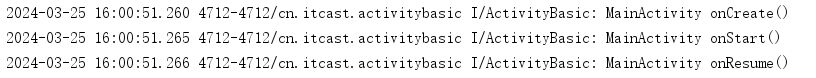
按Home键后，当前应用切换到后台，打印出的日志信息：
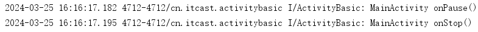
按Home键后重新打开应用，当前应用切换回前台，日志信息：
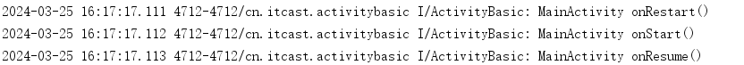
按返回键，当前应用结束运行，日志信息：
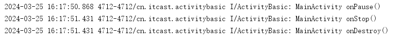
4.2 Activity的创建、配置、启动和关闭¶
4.2.1 创建Activity¶
在ActivityBasic程序中，使用【New】→【Activity】→【Empty Activity】的方式，创建一个名为ActivityExample的Activity。
在ActivityExample中重写生命周期方法，使用Log.i()方法打印这些方法的调用情况。
4.2.3 启动和关闭Activity¶
- 启动Activity
在MainActivity的布局文件中，添加1个TextView控件用于显示当前Activity的名称，添加1个Button控件用于启动ActivityExample。
启动ActivityExample的代码如下：
- 关闭Activity
在ActivityExample的布局文件中，添加1个TextView控件用于显示当前Activity的名称，添加1个Button控件用于关闭当前Activity。
关闭Activity的代码如下：
启动和关闭Activity时，注意观察Logcat中的日志信息。
4.2.2 配置Activity¶
在ActivityBasic程序中，使用【New】→【Java class】的方式，创建一个SecondActivity类，并使该类继承android.app.Activity。
在MainActivity的布局文件中，再添加1个Button控件用于启动SecondActivity。
此时直接在MainActivity中启动SecondActivity，日志窗口中可观察到抛出了ActivityNotFound异常，提示需要在AndroidManifest.xml文件中进行配置。
配置的方法为，在AndroidManifest.xml文件中的<application>标签中添加一个<activity>标签。具体代码如下：
<activity>标签的android:name属性为Activity的java类名，如果Activity的包名与清单文件中<manifest>标签的package属性相同则可以省略包名，配置为：
4.3 Intent与IntentFilter¶
使用隐式Intent在不同程序之间进行消息传递时，Android可以根据intent的属性值匹配并启动目标组件。
4.3.1 action属性¶
Intent的Action属性的值是一个普通的字符串，代表该Intent所要完成的一个抽象动作。
一个过滤规则(intentFilter)可以有多个action。一个IntentFilter必须有一个action，如果没有那么则匹配失败。多个action只要匹配成功一个即可匹配成功。
使用案例：
ActivityBasic程序中新建一个名为app2的Module，在app2中新建一个名为Activity1的Activity。
如果要在app的MainActivity中启动app2的Activity1。注意：app2要先安装到模拟器上。
首先需要在app2的清单文件中，为目标组件（Activity1）的IntentFilter配置action属性。具体代码如下：
<activity android:name=".Activity2">
<intent-filter>
<action android:name="android.intent.action.START_ACTIVITY" />
<category android:name="android.intent.category.DEFAULT" />
</intent-filter>
</activity>
然后在app的MainActivity中设置intent的action属性，具体代码如下：
Intent intent = new Intent();
intent.setAction("android.intent.action.START_ACTIVITY");
startActivity(intent);
注意：使用隐式Intent开启Activity时，系统会默认为该intent添加值为"android.intent.category.DEFAULT"的category属性，因此目标组件的<intent-filter/>中需要有<category android:name="android.intent.category.DEFAULT" />这个配置。
4.3.3 category属性¶
category是一个字符串，Intent可以没有category，但是如果一旦有category，不管有几个，每一个都要能够和过滤规则中的任何一个category相同。简而言之，Intent中携带Category要全部能和IntentFilter中的Category匹配。
使用案例：
在app2的清单文件中，为目标组件（Activity1）的IntentFilter增加category属性。注意：修改完清单文件后，需要重新将应用运行到模拟器上。
具体代码如下：
<activity android:name=".Activity2">
<intent-filter>
<action android:name="cn.itcast.START_ACTIVITY" />
<category android:name="android.intent.category.DEFAULT" />
<category android:name="it.cast.TESTCATEGORY" />
</intent-filter>
</activity>
然后在app的MainActivity中为intent增加category属性，具体代码如下：
Intent intent = new Intent();
intent.setAction("android.intent.action.START_ACTIVITY");
intent.addCategory("it.cast.TESTCATEGORY");
startActivity(intent);
4.3.2 data属性¶
Data属性一般由mimeType和URI两部分组成，通常用来为Action提供操作的数据，也就是说Action负责跳转到指定的组件，Data就可以提供数据给跳转到的组件。
使用案例：
- 调用系统浏览器
首先指定Intent的action为“Intent.ACTION_VIEW”，这是一个android系统的内置动作，其常量值为android.intent.action.VIEW。然后通过Uri.parse()方法，将一个网址字符串解析成一个Uri对象。最后调用Intent的setData()方法将这个Uri对象传递进去。
Intent intent = new Intent(Intent.ACTION_VIEW);
intent.setData(Uri.parse("http://www.baidu.com"));
startActivity(intent);
- 调用拨号界面
首先指定Intent的action为“Intent.ACTION_DIAL”，这又是一个android系统的内置动作，然后在data部分指定协议为tel，号码为10086。
Intent intent = new Intent(Intent.ACTION_DIAL);
intent.setData(Uri.parse("tel:10086"));
startActivity(intent);
- 拨打电话
和Intent调用拨号盘一样，也是setAction()，然后setData()，只是Action，替换为“Intent.ACTION_CALL”。注意：使用“Intent.ACTION_CALL”是，需要在AndroidManifest.xml文件中添加拨号权限。
申请权限：
代码：
Intent intent = new Intent(Intent.ACTION_CALL);
intent.setData(Uri.parse("tel:10086"));
startActivity(intent);
-
发送短信
发送短信和拨打电话是一样的，只是Action和需要申请的权限不同。直接发送短信的Action为：Intent.ACTION_SENDTO。同时要需要调用putExtra()方法添加短信内容。
Intent intent = new Intent(Intent.ACTION_SENDTO);
// 匹配目标组件
intent.setData(Uri.parse("smsto:10086"));
// 添加附加数据
//sms_body固定参数，代表短信内容
//发送短信内容为："《致命魔术》贼好看。"
intent.putExtra("sms_body","《致命魔术》贼好看。");
startActivity(intent);
参考资料：
- Intent 属性详解（上） - 知乎、Intent 属性详解（下） - 知乎
- Android中Intent-filter的四个属性Action，Category，Extras，Data - 博客园
- MIME 类型 | 菜鸟教程 (runoob.com)
- Android Intent常用方法详细介绍，显示Intent，隐式Intent，调用浏览器，拨号，发短信，传递数据_intent.action_view-CSDN博客
- permission 和 user-permission的区别-CSDN博客
- Android: Intent匹配及mimeType匹配，这一篇就够了！！ - 简书 (jianshu.com)
4.4 Avtivity之间的跳转¶
4.4.1 Activity之间的数据传递¶
注意区分setData()与putExtra()方法：setData，传入的是Uri，用于数据的过滤。 setData可以被系统用来寻找匹配目标组件。 putExtra 只是用来设定各种不同类型的附加数据。 不被系统用来寻找匹配目标组件。
- MainActivity 和 SecondActivity 的布局文件代码
MainActivity 的布局文件中添加一个 TextView 用于显示当前Activity名称，添加一个 Button 用于跳转到 SecondActivity。具体代码如下：
<?xml version="1.0" encoding="utf-8"?>
<LinearLayout xmlns:android="http://schemas.android.com/apk/res/android"
android:layout_width="match_parent"
android:layout_height="match_parent"
android:orientation="vertical">
<TextView
android:layout_width="match_parent"
android:layout_height="wrap_content"
android:text="MainActivity"
android:textSize="20sp"
android:gravity="center"/>
<Button
android:layout_width="match_parent"
android:layout_height="wrap_content"
android:text="向SecondActivity传递数据"
android:onClick="click"/>
</LinearLayout>
SecondAvtivity 的布局文件中添加一个 TextView 用于显示当前Activity名称。具体代码如下：
<?xml version="1.0" encoding="utf-8"?>
<LinearLayout xmlns:android="http://schemas.android.com/apk/res/android"
android:layout_width="match_parent"
android:layout_height="match_parent">
<TextView
android:layout_width="match_parent"
android:layout_height="wrap_content"
android:text="SecondActivity"
android:textSize="20sp"
android:gravity="center"/>
</LinearLayout>
- MainActivity 和 SecondActivity 的 Java 代码
在 MainActivity 中将自己的姓名、年龄和性别信息传递到 SecondActivity，具体代码如下：
public class MainActivity extends AppCompatActivity {
@Override
protected void onCreate(Bundle savedInstanceState) {
super.onCreate(savedInstanceState);
setContentView(R.layout.activity_main);
}
void click(View view){
Intent intent = new Intent(MainActivity.this, SecondActivity.class);
intent.putExtra("姓名", "莉莉");
intent.putExtra("年龄", 18);
intent.putExtra("是女生吗？", true);
startActivity(intent);
}
}
在 SecondActivity 中接收 MainActivity 传递过来的数据，并使用 Toast 类进行显示。具体代码如下：
public class SecondActivity extends AppCompatActivity {
@Override
protected void onCreate(Bundle savedInstanceState) {
super.onCreate(savedInstanceState);
setContentView(R.layout.activity_second);
Intent intent = getIntent();
String name = intent.getStringExtra("姓名");
int age = intent.getIntExtra("年龄", 18);
boolean isGril = intent.getBooleanExtra("是女生吗？", true);
Toast.makeText(SecondActivity.this,
"姓名："+name+"，年龄："+age+"，是女生吗？"+isGril,
Toast.LENGTH_LONG).show();
}
}
4.4.2 Activity之间的数据回传¶
- MainActivity和SecondActivity的布局代码
MainActivity 的布局文件中添加一个 TextView 用于显示当前Activity名称，添加一个 Button 用于获取位置信息。具体代码如下：
<?xml version="1.0" encoding="utf-8"?>
<LinearLayout xmlns:android="http://schemas.android.com/apk/res/android"
android:layout_width="match_parent"
android:layout_height="match_parent"
android:orientation="vertical">
<TextView
android:layout_width="match_parent"
android:layout_height="wrap_content"
android:text="MainActivity"
android:textSize="20sp"
android:gravity="center"/>
<Button
android:layout_width="match_parent"
android:layout_height="wrap_content"
android:text="获取位置信息"
android:onClick="click"/>
</LinearLayout>
SecondAvtivity 的布局文件中添加一个 TextView 用于显示当前Activity名称，添加一个 Button 用于返回位置信息。具体代码如下：
<?xml version="1.0" encoding="utf-8"?>
<LinearLayout xmlns:android="http://schemas.android.com/apk/res/android"
android:layout_width="match_parent"
android:layout_height="match_parent"
android:orientation="vertical">
<TextView
android:layout_width="match_parent"
android:layout_height="wrap_content"
android:text="SecondActivity"
android:textSize="20sp"
android:gravity="center"/>
<Button
android:layout_width="match_parent"
android:layout_height="wrap_content"
android:text="返回位置信息"
android:onClick="click"/>
</LinearLayout>
- MainActivity 和 SecondActivity 的Java代码
MainActivity 中开启 SecondActivity，并接收 SecondActivity 回传的数据， 回传的数据使用 Toast 类进行显示。具体代码如下：
public class MainActivity extends AppCompatActivity {
@Override
protected void onCreate(Bundle savedInstanceState) {
super.onCreate(savedInstanceState);
setContentView(R.layout.activity_main);
}
void click(View v){
Intent intent = new Intent(MainActivity.this, SecondActivity.class);
startActivityForResult(intent, 1);
}
@Override
protected void onActivityResult(int requestCode, int resultCode, Intent data) {
super.onActivityResult(requestCode, resultCode, data);
if (requestCode==1 && resultCode==2){
String acquireData = data.getStringExtra("位置");
Toast.makeText(MainActivity.this, "当前位置："+acquireData,
Toast.LENGTH_LONG).show();
}
}
}
在 SecondActivity 中将当前位置回传到 MainActivity 。具体代码如下：
public class SecondActivity extends AppCompatActivity {
@Override
protected void onCreate(Bundle savedInstanceState) {
super.onCreate(savedInstanceState);
setContentView(R.layout.activity_second);
}
void click(View v){
Intent intent = new Intent();
intent.putExtra("位置", "新乡工程学院");
setResult(2, intent);
finish();
}
}
参考资料：
4.5 任务栈和启动模式¶
4.5.1 任务栈¶
Android对Activity的管理方式如下图所示。Android中使用任务栈（TaskRecord）对Activity进行存储和管理。每个应用可以启动多个任务栈，这些任务栈由当前应用的活动栈（ActivityStack）来进行管理的。一般每个应用对应一个ActivityStack，在不同的显示设备中，当前显示的Activity对应的任务栈为前台栈，其他任务栈都是后台栈。Android支持主屏幕、外接屏幕和虚拟屏幕三种显示设备，一般在手机上只有主屏幕，不同设备中显示的应用也以栈的方式进行管理。
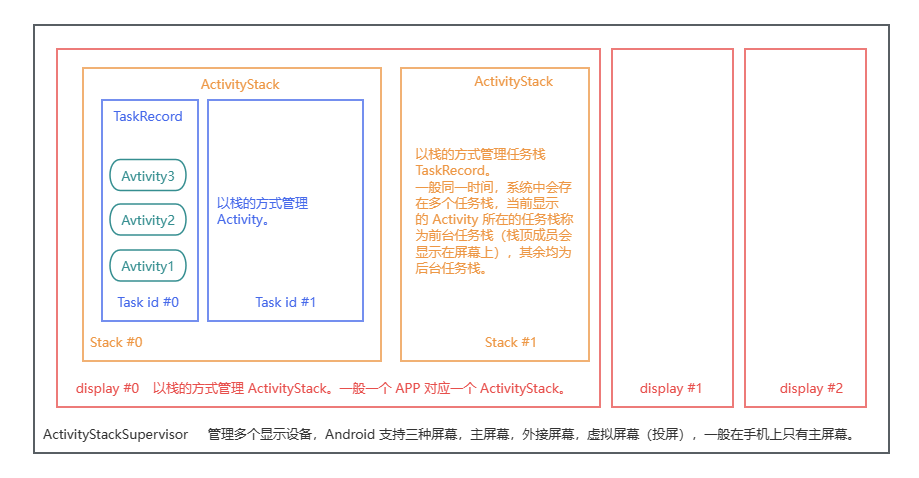
使用adb命令（在SDK安装路径下的\platform-tools目录中）可以打印任务栈信息。Android11以下搜索关键字：Running activities。
例如，启动模拟器后，打印任务栈信息，精简后的信息如下：
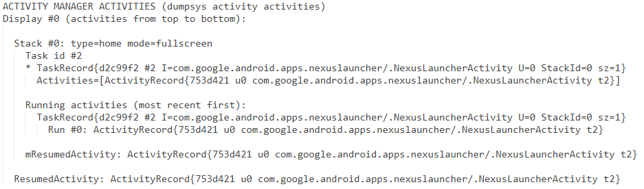
从以上信息中可分析出，当前在0号显示器（Display #0）中有一个0号活动栈（Stack #0）， 0号活动栈中有一个2号任务栈（Task id #2），2号任务栈中有一个Activity正在运行，即com.google.android.apps.nexuslauncher这个包下的NexusLauncherActivity，这是Android 系统的桌面（启动器），可以启动其他应用程序。此时2号任务栈为前台栈。
接着，在模拟器的桌面启动拨号应用，观察任务栈的变化。
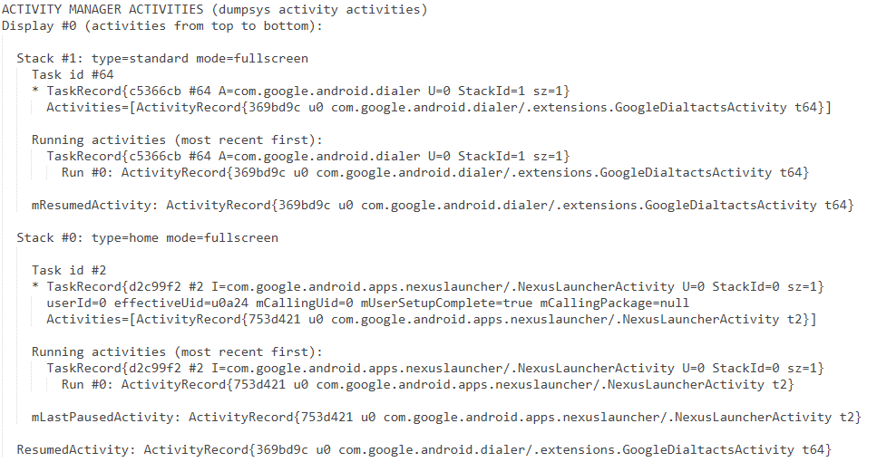
此时，0号显示器中有了2个活动栈，1号活动栈中中一个id为64的任务栈，64号任务栈运行了一个Activity，即com.google.android.dialer包下的extensions.GoogleDialtactsActivity，这就是刚刚启动的拨号应用。此时64号任务栈为前台栈。
参考资料：
4.5.2 启动模式¶
1、standard模式（默认模式）¶
特点：
每启动一个Activity，就会在栈顶创建一个新的实例。
实验验证：
创建3个Activity。在每个Activity的onCreate()方法和onDestory()函数中打印日志，记录每个实例的创建顺序。
<activity android:name=".Activity1">
<intent-filter>
<action android:name="android.intent.action.MAIN" />
<category android:name="android.intent.category.LAUNCHER" />
</intent-filter>
</activity>
<activity android:name=".Activity2" />
<activity android:name=".Activity3"></activity>
在代码中设置如下跳转顺序：Activity1->Activity2->Activity3->Activity1。
package cn.itcast.standard;
import android.content.Intent;
import android.support.v7.app.AppCompatActivity;
import android.os.Bundle;
import android.util.Log;
import android.view.View;
import android.widget.Button;
public class Activity1 extends AppCompatActivity {
@Override
protected void onCreate(Bundle savedInstanceState) {
super.onCreate(savedInstanceState);
setContentView(R.layout.activity_test1);
Log.i("standard", "Create " + Activity1.this.toString());
Button btn = findViewById(R.id.btn_1);
btn.setOnClickListener(new View.OnClickListener() {
@Override
public void onClick(View v) {
Intent intent = new Intent(Activity1.this, Activity2.class);
startActivity(intent);
}
});
}
@Override
protected void onDestroy() {
super.onDestroy();
Log.i("standard", "Destroy " + Activity1.this.toString());
}
}
运行程序，依次执行跳转操作，打印任务栈信息如下：
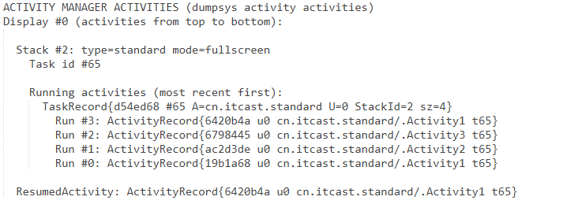
然后一直按返回键，直到退出应用。Logcat窗口输出的日志信息如下：
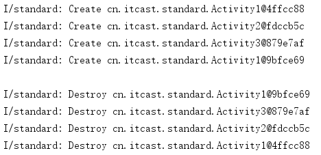
2、SingleInstance模式¶
特点：
指定SingleInstance模式的Activity会启动一个新任务栈来管理该Activity实例。如果要启动的Activity实例在任务栈中不存在，系统会新建一个任务栈压入该实例；否则，系统会把该Activity实例所在任务栈移到前台，从而显示该Activity。
实验验证：
创建3个Activity，设置Activity2的启动模式为singleInstance。
<activity android:name=".Activity1">
<intent-filter>
<action android:name="android.intent.action.MAIN" />
<category android:name="android.intent.category.LAUNCHER" />
</intent-filter>
</activity>
<activity android:name=".Activity2" android:launchMode="singleInstance"/>
<activity android:name=".Activity3"></activity>
重写Activity2的生命周期函数，并在每个方法中打印日志信息，观察具体的调用情况。
package cn.itcast.singleinstance;
import android.content.Intent;
import android.support.v7.app.AppCompatActivity;
import android.os.Bundle;
import android.util.Log;
import android.view.View;
import android.widget.Button;
public class Activity2 extends AppCompatActivity {
@Override
protected void onCreate(Bundle savedInstanceState) {
super.onCreate(savedInstanceState);
setContentView(R.layout.activity_2);
Log.i("singleInstance", "Create " + Activity2.this.toString());
Button btn = findViewById(R.id.si_btn_2);
btn.setOnClickListener(new View.OnClickListener() {
@Override
public void onClick(View v) {
Intent intent = new Intent(Activity2.this, Activity3.class);
startActivity(intent);
}
});
}
@Override
protected void onDestroy() {
super.onDestroy();
Log.i("singleInstance", "Destroy " + Activity2.this.toString());
}
@Override
protected void onRestart() {
super.onRestart();
Log.i("singleInstance", "Restart " + Activity2.this.toString());
}
}
在代码中设置如下跳转顺序：Activity1->Activity2->Activity3->Activity1->Activity2->Activity3。
运行程序，依次执行跳转操作，观察任务栈信息。
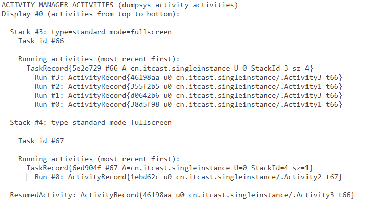
然后一直按返回键，直到退出应用。Logcat窗口中打印的日志信息如下：
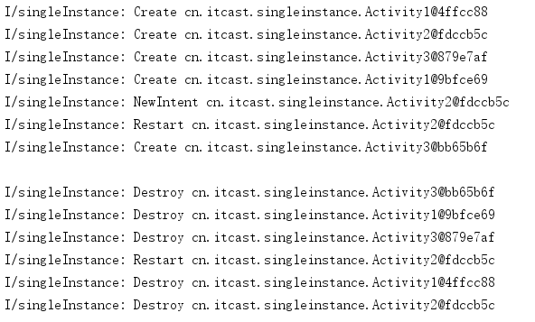
总结：
OnNewIntent()只对SingleTop(且位于栈顶)，SingleTask和SingleInstance(且已经在任务栈中存在实例)的情况下，再次启动它们时才会调用，即==只对startActivity有效==，对仅仅从后台切换到前台而不再次启动的情形，不会触发onNewIntent。
从任务栈信息中可分析出，启动方式为SingleInstance时，启动该Activity不仅会创建新任务栈，还会创建新活动栈管理此任务栈。
3、singleTop模式¶
特点：
如果要启动的Activity已经在栈顶，则直接进行复用，并且通过onNewIntent方法进行通知；否则创建新的实例。
实验验证：
创建3个Activity，设置Activity3的启动模式为singleInstance。在每个Activity的onCreate()方法和onDestory()函数中打印日志，记录每个实例的创建顺序。
设计两组实验，对比给Activity2设置singleTop模式前后的运行结果。
实验一：Activity2使用默认启动模式。
<activity android:name=".Activity1">
<intent-filter>
<action android:name="android.intent.action.MAIN" />
<category android:name="android.intent.category.LAUNCHER" />
</intent-filter>
</activity>
<activity android:name=".Activity2"/>
<activity android:name=".Activity3" android:launchMode="singleInstance"></activity>
在代码中设置如下跳转顺序：Activity1->Activity2->Activity3->Activity2。
运行程序，依次执行跳转操作，观察任务栈信息。
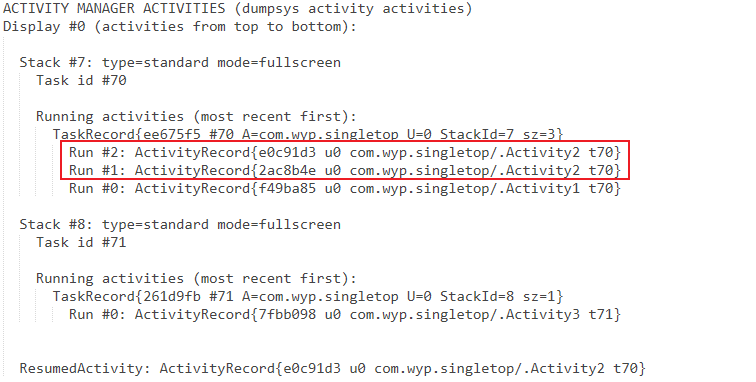
然后一直按返回键，直到退出应用。Logcat窗口中打印的日志信息如下：
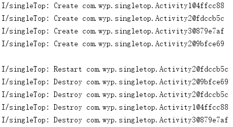
实验二：Activity2启动模式设置为singleTop。
<activity android:name=".Activity1">
<intent-filter>
<action android:name="android.intent.action.MAIN" />
<category android:name="android.intent.category.LAUNCHER" />
</intent-filter>
</activity>
<activity android:name=".Activity2" android:launchMode="singleTop"/>
<activity android:name=".Activity3" android:launchMode="singleInstance"></activity>
在代码中设置如下跳转顺序：Activity1->Activity2->Activity3->Activity2。
运行程序，依次执行跳转操作，观察任务栈信息。
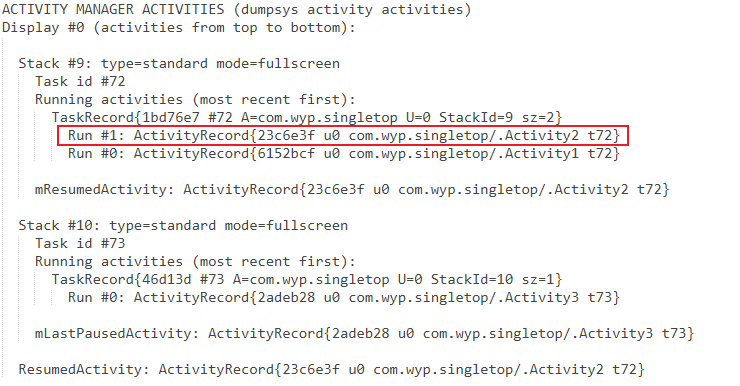
然后一直按返回键，直到退出应用。Logcat窗口中打印的日志信息如下：
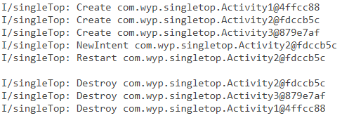
4、singleTask模式¶
特点：
如果要启动的Activity已经在栈中，则把当前实例上面的示例全部出栈，从而让该实例展示到前台；否则创建新的实例。
实验验证：
创建3个Activity，设置Activity3的启动模式为singleInstance。在每个Activity的onCreate()方法和onDestory()函数中打印日志，记录每个实例的创建顺序。
设计两组实验，对比给Activity2设置singleTask模式前后的运行结果。
实验一：Activity1使用默认启动模式。
<activity android:name=".Activity1">
<intent-filter>
<action android:name="android.intent.action.MAIN" />
<category android:name="android.intent.category.LAUNCHER" />
</intent-filter>
</activity>
<activity android:name=".Activity2"/>
<activity android:name=".Activity3" android:launchMode="singleInstance"></activity>
在代码中设置如下跳转顺序：Activity1->Activity2->Activity3->Activity1。
运行程序，依次执行跳转操作，观察任务栈信息。

然后一直按返回键，直到退出应用。Logcat窗口中打印的日志信息如下：
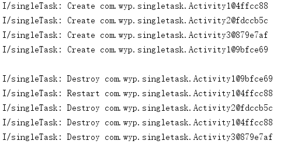
实验二：Activity1启动模式设置为SingleTask。
<activity android:name=".Activity1" android:launchMode="singleTask">
<intent-filter>
<action android:name="android.intent.action.MAIN" />
<category android:name="android.intent.category.LAUNCHER" />
</intent-filter>
</activity>
<activity android:name=".Activity2" />
<activity android:name=".Activity3" android:launchMode="singleInstance"></activity>
在代码中设置如下跳转顺序：Activity1->Activity2->Activity3->Activity1。
运行程序，依次执行跳转操作，观察任务栈信息。
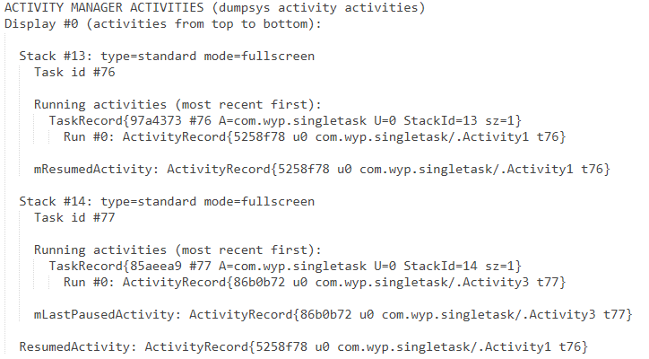
然后一直按返回键，直到退出应用。Logcat窗口中打印的日志信息如下：
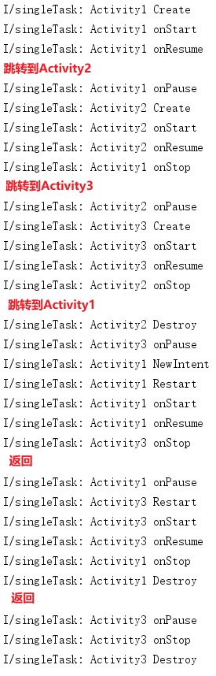
总结：
启动应用时，创建76号任务栈，并将Activity1入栈。开启Activity2时，activity2会被压入到当前栈中。开启Activity3时，由于Activity3的启动模式为SingleInstance，因此会新建一个任务栈（77号），并将该实例压入新栈。再次开启Activity1时，由于Activity1的启动模式为SingleTask，此时位于76号栈栈顶的Activity2会先被弹出栈，然后直接取出Activity1的实例继续运行。
参考资料：
4.6 使用Fragment¶
4.6.2 Fragment的生命周期¶
Fragment不能独立存在，必须嵌入到Activity中使用，所以Fragment生命周期直接受所在的Activity影响。
- 当在Activity中创建Fragment时，Fragment处于启动状态；
- 当Activity被暂停时，其中的所有Fragment也被暂停；
- 当Activity被销毁时，所有在该Activity中的Fragment也被销毁。
- 当一个Activity处于运行状态时，可以单独地对每一个Fragment进行操作，如添加或删除，当添加时，Fragment处于启动状态。当删除时，Fragment处于销毁状态。
4.6.3 创建Fragment¶
方法一：
在项目目录结构窗口中右键，依次选择【New】→【Fragment】→【Fragment (blank)】选项。然后在打开的Configure Component窗口中，填写Fragment Name和Fragment Layout Name，并取消勾选【Include fragment factory methods? 】和【Include interface callbacks?】。再点击【finish】按钮完成创建。
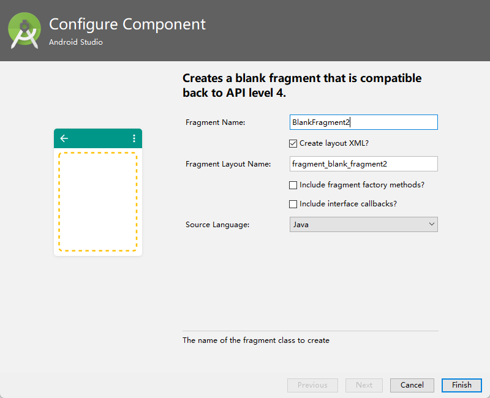
方法二：
- 在选定包名上右键，选择【New】→【Java class】创建一个Java类继承自android.support.v4.app.Fragment。
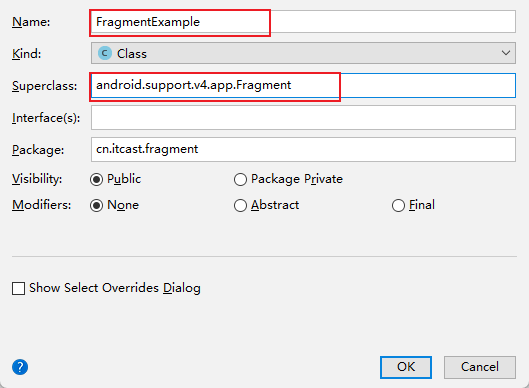
-
创建相应的布局文件fragment_example.xml 。
-
重写 FragmentExample 的 onCreateView() 方法，并在其中加载布局 fragment_example.xml。
public class FragmentExample extends Fragment {
@Override
public View onCreateView(LayoutInflater inflater, ViewGroup container, Bundle savedInstanceState) {
View v = inflater.inflate(R.layout.fragment_example, container, false);
return v;
}
}
4.6.4 在Activity中添加Fragment¶
方法一：静态添加（在Activity的布局文件中添加）
使用<fragment/>标签进行添加。必须指定 id 属性，如果不指定 id 属性，程序运行时会闪退。name属性也必须指定，属性值为 Fragment 全路径。
如果想要预览 Fragment，需要使用 tools:layout="@layout/fragment_blank" 指定想要预览的布局，使用该属性前还需要在当前布局文件中添加对应的名称空间xmlns:tools="http://schemas.android.com/tools"。注意：预览图中的布局并非最终运行的布局，运行时的布局根据 android:name的值动态加载。
<?xml version="1.0" encoding="utf-8"?>
<LinearLayout xmlns:android="http://schemas.android.com/apk/res/android"
xmlns:tools="http://schemas.android.com/tools"
android:layout_width="match_parent"
android:layout_height="match_parent">
<fragment
android:id="@+id/fragment_1"
android:name="cn.itcast.fragment.BlankFragment"
android:layout_width="match_parent"
android:layout_height="match_parent"
tools:layout="@layout/fragment_blank"/>
</LinearLayout>
方法二：动态添加（在Activity的Java代码中加载）
获取 FragmentManager 时，如果使用 android.app 包下的 Fragment 时，使用 getFragmentManager() 方法；如果使用 v4 包下的 Fragment，则使用 getSupportFragmentManager() 方法，此时，Activity必须继承 FragmentActivity 或 AppCompatActivity。
public class MainActivity extends AppCompatActivity {
@Override
protected void onCreate(Bundle savedInstanceState) {
super.onCreate(savedInstanceState);
setContentView(R.layout.activity_main);
// 1、创建Fragment对象
FragmentExample fragment = new FragmentExample();
// 2、获取Fragment管理器（FragmentManager）实例
FragmentManager fm = getSupportFragmentManager();
// 3、开启事务 FragmentTransaction
FragmentTransaction beginTransaction = fm.beginTransaction();
// 4、添加Fragment。第一个参数为Activity中的ViewGroup容器资源id；第二个参数为需要添加的Fragment对象
beginTransaction.replace(R.id.id_main, fragment);
// 5、提交事务
beginTransaction.commit();
}
}
FragmentTransaction 的事务方法：
| 操作 | 说明 | 备注 |
|---|---|---|
| replace | 先将之前存在于容器的 Fragment 全部移除（销毁），然后添加要显示的 Fragment（会重新执行一遍它的生命流程） 静态添加的 Fragment 不会被移除！！！ |
如果容器中已经存在和要添加的 Fragment 相同的实例（注意：相同是指同一个对象，同一个类但对象不同， 例如两次 new，则不算相同） 那么它只会将除此以外的其他 Fragment 清除，而不会再次添加相同的 Fragment 实例。影响性能，不推荐使用。 |
| add | 不会将之前存在于容器的 Fragment 移除，而是继续往容器里添加 Fragment | 1. 如果同一个对象多次添加会报错 ；2. 由于 add 操作不会将之前的 Fragment 删除，所以会造成多个 Fragment 重叠的现象，要解决这个问题可以使用 hide 隐藏之前的 Fragment |
| hide | 隐藏容器中的 Fragment | |
| show | 将隐藏的 Fragment 显示出来 | hide 和 show 是配对的，当要显示隐藏的 Fragment A 时，就 show(A)；而对于其他 Fragment，则先 hide 起来，等之后要显示时再 show |
4.6.5 Activity和Fragment间的通信¶
- MainActivity布局文件和Java代码
布局文件代码：
<?xml version="1.0" encoding="utf-8"?>
<LinearLayout xmlns:android="http://schemas.android.com/apk/res/android"
android:layout_width="match_parent"
android:layout_height="match_parent"
android:orientation="vertical"
android:id="@+id/fragment">
</LinearLayout>
Java代码：
public class MainActivity extends AppCompatActivity {
@Override
protected void onCreate(Bundle savedInstanceState) {
super.onCreate(savedInstanceState);
setContentView(R.layout.activity_main);
if (savedInstanceState == null) {
FragmentTransaction transaction = getSupportFragmentManager().beginTransaction();
transaction.add(R.id.fragment, BlankFragment.newInstance("Fragment", "test"));
transaction.commit();
}
}
}
- Fragment 布局文件和代码
创建 Fragment 时勾选上【Include fragment factory methods? 】选项。
布局文件代码：
<FrameLayout xmlns:android="http://schemas.android.com/apk/res/android"
android:layout_width="match_parent"
android:layout_height="match_parent">
<TextView
android:id="@+id/text"
android:layout_width="match_parent"
android:layout_height="match_parent"
android:gravity="center" />
</FrameLayout>
Java文件代码：
package cn.itcast.simplemenu;
import android.os.Bundle;
import android.support.v4.app.Fragment;
import android.view.LayoutInflater;
import android.view.View;
import android.view.ViewGroup;
import android.widget.TextView;
/**
* A simple {@link Fragment} subclass.
* Use the {@link BlankFragment#newInstance} factory method to
* create an instance of this fragment.
*/
public class BlankFragment extends Fragment {
// TODO: Rename parameter arguments, choose names that match
// the fragment initialization parameters, e.g. ARG_ITEM_NUMBER
private static final String ARG_PARAM1 = "param1";
private static final String ARG_PARAM2 = "param2";
// TODO: Rename and change types of parameters
private String mParam1;
private String mParam2;
public BlankFragment() {
// Required empty public constructor
}
/**
* Use this factory method to create a new instance of
* this fragment using the provided parameters.
*
* @param param1 Parameter 1.
* @param param2 Parameter 2.
* @return A new instance of fragment BlankFragment.
*/
// TODO: Rename and change types and number of parameters
public static BlankFragment newInstance(String param1, String param2) {
BlankFragment fragment = new BlankFragment();
Bundle args = new Bundle();
args.putString(ARG_PARAM1, param1);
args.putString(ARG_PARAM2, param2);
fragment.setArguments(args);
return fragment;
}
@Override
public void onCreate(Bundle savedInstanceState) {
super.onCreate(savedInstanceState);
if (getArguments() != null) {
mParam1 = getArguments().getString(ARG_PARAM1);
mParam2 = getArguments().getString(ARG_PARAM2);
}
}
@Override
public View onCreateView(LayoutInflater inflater, ViewGroup container,
Bundle savedInstanceState) {
// Inflate the layout for this fragment
View view = inflater.inflate(R.layout.fragment_blank, container, false);
TextView textView = view.findViewById(R.id.text);
textView.setText(mParam1 + " " + mParam2);
return view;
}
}
参考资料：